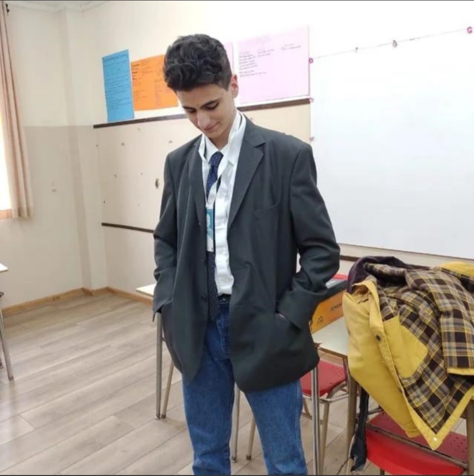

Martín Di Marco

Datos Personales
- Dirección: Nahuel Malal
- Teléfono: 2944213018
- Fecha de nacimiento: 20/09/2004
- Edad: 18 años
Estudios Cursados
- Educación primaria, Colegio San Patricio
- Educación secundaria, Colegio Tecnológico del Sur
- Educación terciaria/universitaria, lugar y título obtenido
Capacitación Complementaria
- Cambridge's First Certificate
- 2021
Experiencia Laboral
-
Lugar de trabajo 1
- Asistente de mantenimiento
- Ene 2020 - Feb 2020
- Rubers Marcano
- Numero de teléfono: +54 9 294 464-7990
Descargar en formato de PDF